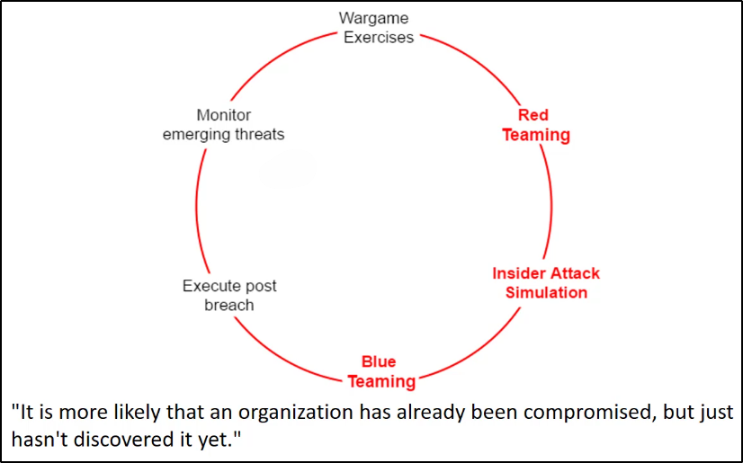
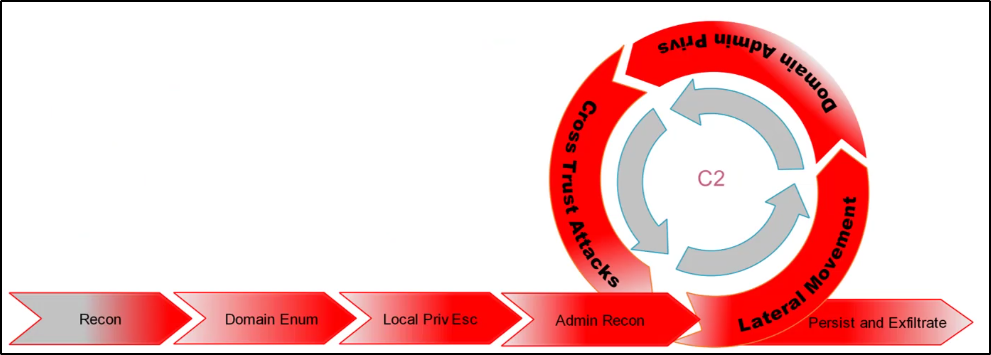

E' una metodologia dove si assume che l'azienda è già stata breachata,
ma lei non ne è a conoscenza.
E' usata dalla Microsoft Enterprise Cloud Red Team.

La parte "Insider Attack Simulation" è molto importante
nella metodologia "Assume Breach".
